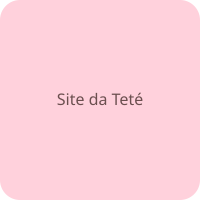

Sobre a Loja da Teté

A Loja da Teté nasceu junto com o primeiro aninho dela: uma lojinha de produtos fofos e seguros pra bebês e crianças pequenas.
- Produtos testados pela própria Teté
- Cores suaves, pensadas pro universo do bebê
- Entrega com todo carinho